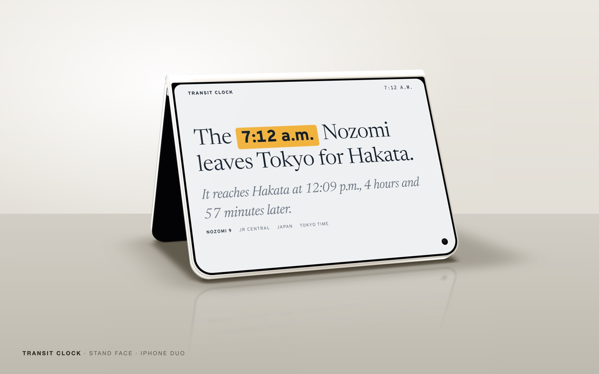
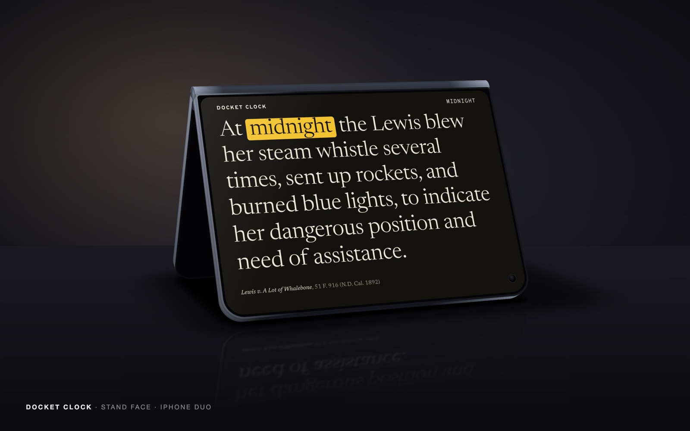

Sentence Clocks
2026
Two clocks that tell the time in sentences. One is made of train timetables, the other of court opinions.
The project opens on the Transit Clock. A switch in the corner of the page leads to the Docket Clock, whose code is in a repository of its own.





What they are
Each clock shows one sentence for the minute you are in, and a new one when the minute changes.
The Transit Clock shows a real train, ferry or bus that is timetabled to leave at exactly that minute, somewhere in the world. At 7:12 in the morning:
The 7:12 a.m. Nozomi leaves Tokyo for Hakata.
The Docket Clock shows a sentence from a published American court opinion that names that exact minute, with its citation. At midnight:
At midnight the Lewis blew her steam whistle several times, sent up rockets, and burned blue lights, to indicate her dangerous position and need of assistance.
That is from Lewis v. A Lot of Whalebone, decided in 1892. Laid out as a grid, the court’s day has a shape: half of all the times people give in court are on the hour, and two minutes of the day have never come up at all.
What I did
- Gathered the timetables.For the first clock: published schedules from about thirty transit networks, from Amtrak to Indian Railways. On a weekday that is around 350,000 trips. I kept about ten thousand, at least six for every minute.
- Turned rows into sentences.A row in a timetable becomes a line a person would say, with stop codes and shorthand cleaned up on the way.
- Had the idea for a second clock.A courtroom is the one place where people have to say exactly what time it was. So the law reports should be full of minutes.
- Read the law reports by script.Harvard’s Caselaw Access Project has put American case law online. My script read about 7,800 volumes and found about 145,000 sentences that name a time of day.
- Chose one sentence for each minute.Rules did the coarse work. Then I read every sentence the clock shows, and took 366 out by hand. Nothing about violence, illness or children is shown.
- Designed the two pages.On both, the sentence is set like a book. One adds a departure board and a dot-matrix map. The other draws the day as a grid of 1,440 dots.
- Made them clocks to keep, and shipped them.Stood on a desk, a phone shows only the sentence. Each clock is one HTML file with no framework, hosted on GitHub Pages.
Who did what
- Inspired by
- The Literature Clock by Johannes Enevoldsen, which tells the time with sentences from novels. It grew out of an e-reader clock by Jaap Meijers and a list of quotations sent in by readers of the Guardian in 2011. The Transit Clock swaps the novels for timetables.
- Idea for the Docket Clock
- Mine. The same kind of clock, read from court opinions.
- Timetables
- Published by the operators. Each departure names its operator on the page.
- Opinions
- The Caselaw Access Project at the Harvard Law School Library Innovation Lab, which made them public.
- Data, design and code
- Me. I built both with Claude Code.